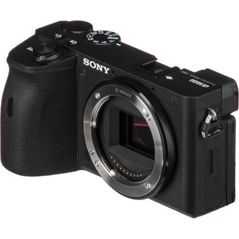
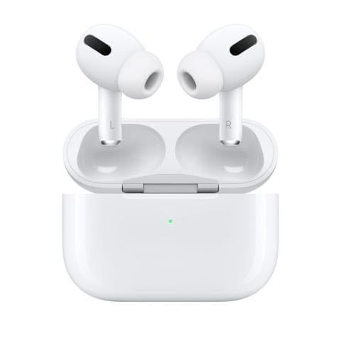
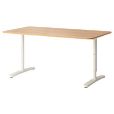
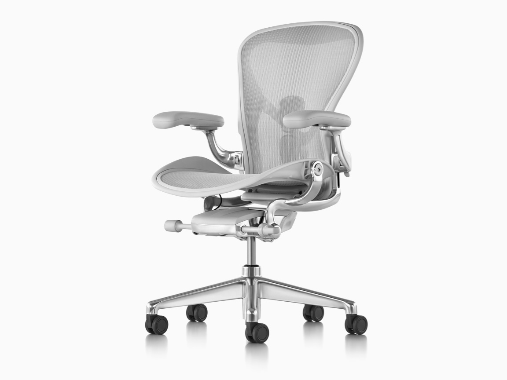
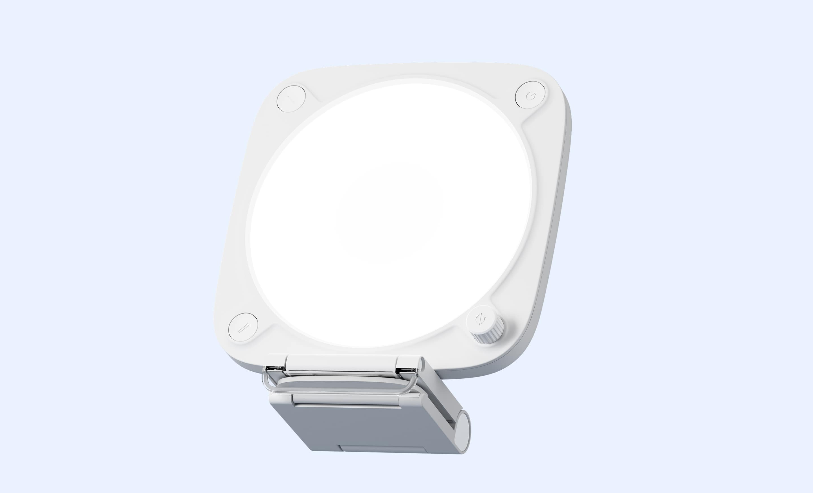
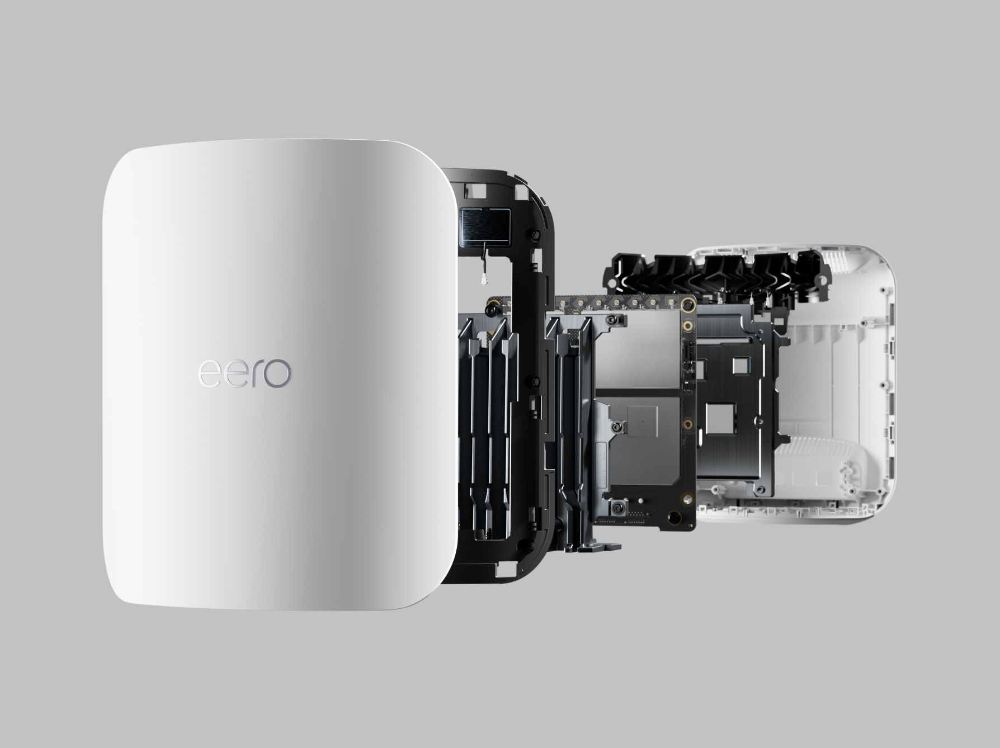

Logitech MX Brio 4K
The clean default for a serious home office: 4K capture, a larger sensor than older Brio models, USB-C, and a physical privacy shutter.
View on AmazonUpdated June 2026
Current work-from-home gear for looking clear, sounding normal, and making the desk stop fighting back.
Amazon links use tracking ID heismukamily-20. As an Amazon Associate, Colin earns from qualifying purchases.
Look clear
The baseline shifted from DSLR rigs to sharper USB-C webcams with better sensors, privacy shutters, and software that does not require a second hobby.
The clean default for a serious home office: 4K capture, a larger sensor than older Brio models, USB-C, and a physical privacy shutter.
View on Amazon
A tiny 4K webcam built for laptop people who want a better camera without hauling a desk rig between rooms, offices, and trips.
Visit maker
For the person who records, streams, or presents constantly: a modern Sony APS-C body, a wide prime lens, clean power, and one good light still wins.
Search AmazonSound sane
A decent mic or business headset makes more difference than another camera upgrade, especially in shared spaces and long calls.

A USB-C and XLR dynamic mic with onboard DSP, auto-leveling, and voice isolation. Great when calls, recordings, and demos all happen at the same desk.
View on Amazon
Broadcast-style sound with both USB and XLR paths. It is less fussy than a full studio chain and still grows with an audio interface later.
View on Amazon
A foldable business headset with active noise cancellation and a real boom mic, built for people who take calls away from a treated room.
View on Amazon
Not the best microphone, but excellent as a pocketable backup with strong noise cancellation for calls from airports, cafes, and the couch.
View on AmazonWork longer
Quiet input devices, a stable sit-stand desk, a proper chair, and a USB-C monitor are boring purchases. Boring is perfect here.

A productivity mouse with haptic feedback, Actions Ring shortcuts, quiet clicks, fast scrolling, and an 8K DPI sensor that tracks on glass.
View on Amazon
A low-profile keyboard with quiet keys, multi-device switching, and backlighting that behaves like it has met a human before.
View on Amazon
A 27-inch 4K Thunderbolt hub monitor keeps the desk simple: one cable for display, charging, networking, and USB devices.
View on Amazon
A long-running favorite because it is customizable, stable, repairable, and supported well enough to be worth buying once.
Search Amazon
Still the canonical mesh office chair. Buy used or new, but buy for fit: size and posture matter more than the logo.
View on AmazonRemove friction
Lighting, docks, and network gear are not toys once your desk becomes a small broadcast booth with too many USB-C opinions.

A compact key light for cleaner calls and recordings when window light is gone, weird, or actively betraying you.
View on AmazonA Thunderbolt 5 dock for people who keep adding displays, fast storage, Ethernet, microphones, cameras, and then pretend one port was enough.
View on Amazon
Video calls hate weak uplinks and bad roaming. Wi-Fi 7 mesh is not magic, but it is a good fix for big homes and dead zones.
View on AmazonResearch trail
Official product pages anchor specs. Independent reviews and buying guides keep the list from becoming pure manufacturer karaoke.